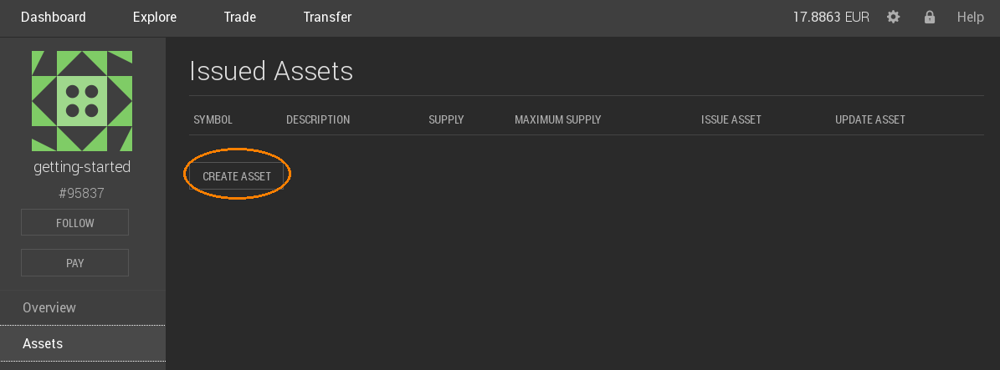
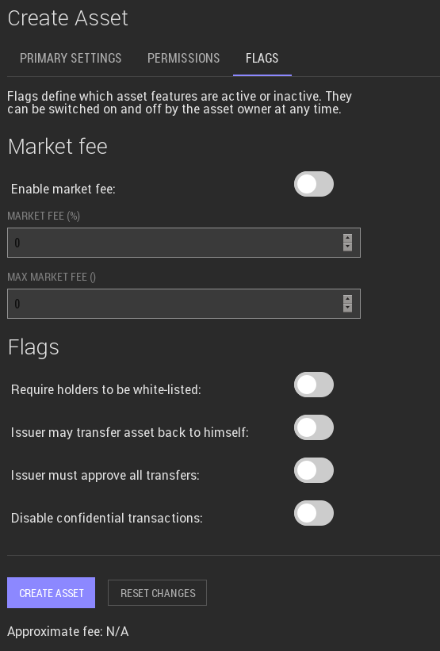
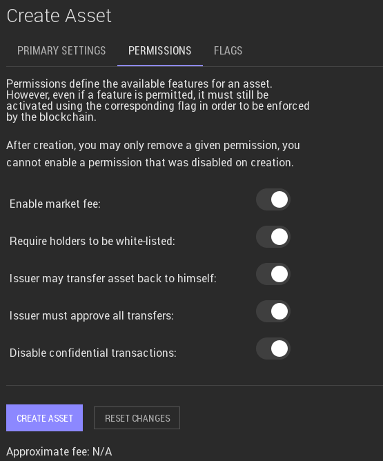
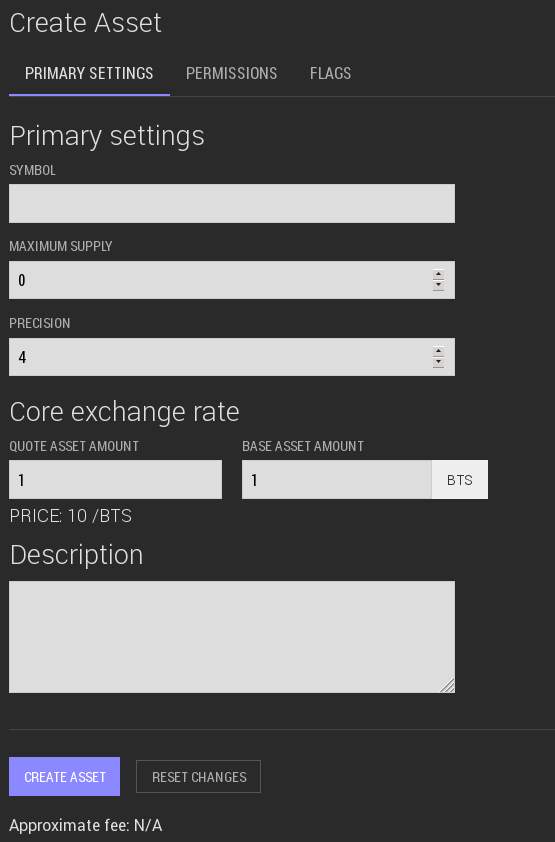
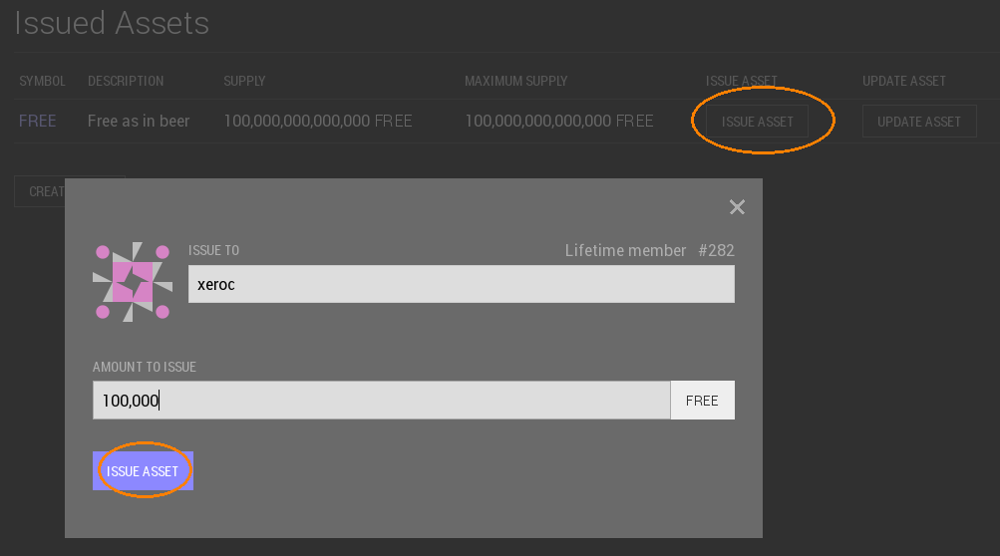

Creating a new UIA
In order to create a new asset, we first need to enter our account’s
asset page and click CREATE ASSET:

We will enter the asset creation page that will allow us to define the
assets parameters.
Primary Settings
The most important settings are listed in the primary settings.

The Symbol defined here will be reserved in the system for your assets.
One the asset is created, the symbol cannot be changed again!
Note
Smybols with less than 5 characters are very expense.
Please consult the Networks fees in the explorer!
The maximum supply is also a permanent setting and denotes the maximum
amount of shares that can ever exist at the same time.
The precision is used to denoted the number of decimal places. A 0
will result in an asset that cannot be separated below integer amounts
(e.g. 1, 2, ..)
To allow transaction fees to be paid in the native asset, a core
exchange rate is required at which a customer can implicitly trade the
UIA into BTS from the asset’s fee pool. This also requires that the
fee pool is funded (e.g. by the issuer). Since all prices in BitShares
are internally represented as fractions (i.e. a/b), we need to
define a ratio between quote (the UIA) and base (BTS), i.e. the
numerator and denominator for price = a/b.
Finally, a description can be used to let everyone know the purpose
of the asset, or an internet address for further information.
Permissions (optional)
Even though the default settings should be fine for most UIAs, we have
the option to opt-out of some available features. (By default, or
permissions are enabled).
Note
Once a permission has been set to false, the permission
cannot be reactivated!

We have the options to opt-out of:
- Enabling Market Fees
- Requiring holders to be white-listed
- Allow Issuer to withdraw from any account
- Require all transfers to be approved by the issuer
- Allow to disable confidential transactions
Note that setting these permissions does not imply that the features is
enabled. To do so, we would also require to enable the corresponding
flag(s). (See below)
Flags and Market Fees (optional)
The flags are used to actually enable a particular features, such as
market fees or confidential transfers.

If we have set the permission to have a market fee, we can enable the
market fees here and set a percentage and max. fee.
We here also can enable the requirements for users to be white-listed,
enable confidential transfers and give the issuer the power to withdraw
its asset from customer accounts.
Issuing Shares
After creating the asset, no shares will exist until the issuer issues
them:

The asset creation fee
The asset creation fee depends on the length of your symbol. 3 Character
Symbols are the shortest and are rather expensive while symbols with 5
or more characters are significantly cheaper.
50% of the asset creation fee are used to pre-fill the assets fee pool.
From the other 50%, 20% go to the network and 80% go to the referral
program. This means, that if you are a life-time member, you get back
40% of the asset creation fee after the vesting period (currently 90
days).

{kind=link}
{kind=link}
{kind=link}
{kind=link}
{kind=link}